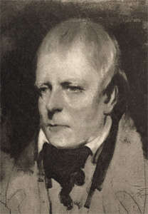

|
|
Home | Corson
Collection | Biography | Works | Image
Collection | Recent
Publications | Correspondence | Forthcoming
Events | Links | E-texts | Contact
Sir John Watson Gordon's Unfinished Portrait
of Scott (1830?)
| The Scottish
National Portrait Gallery holds an unfinished half-length
portrait by Sir John Watson
Gordon depicting Sir Walter Scott in three-quarter face,
turned to the left. Francis Russell has argued that its composition
was worked out at the same time as Gordon's 1830
portrait of Scott for Robert Cadell, for which Scott
sat in March 1830 (Portraits of Sir Walter Scott,
p. 41). Six signed replicas of the portrait have been identified,
including a vignette in the Scottish National Portrait Gallery
which was apparently made to be engraved. Engravings by Samuel
Freeman and Henry Robinson,
clearly derived from the vignette, were published by Blackie & Son
in 1835 and 1837 respectively. Also derived from Gordon's
unfinished painting is the image
of Scott in Thomas Faed's Sir
Walter Scott and his Literary Friends at Abbotsford (1850).
Faed may have worked from a copy of the signed replica owned
by the Earl of Minto. |

Click
on the thumbnail to see a photogravure of Gordon's
unfinished portrait of Scott
|
|
Follow the links below for a selection of images from Edinburgh
University Library's Corson Collection:
Bibliography
- Caw, James L. The Scott Gallery:
A Series of One Hundred and Forty-Six Photogravures, Together
with Descriptive Letterpress (Edinburgh; London: T.C. & E.C.
Jack, 1903)
- Russell, Francis. Portraits
of Sir Walter Scott: A Study of Romantic Portraiture (London:
The Author, 1987)
Back to Index

Last updated: 13-Jan-2009
© Edinburgh University Library
|
|